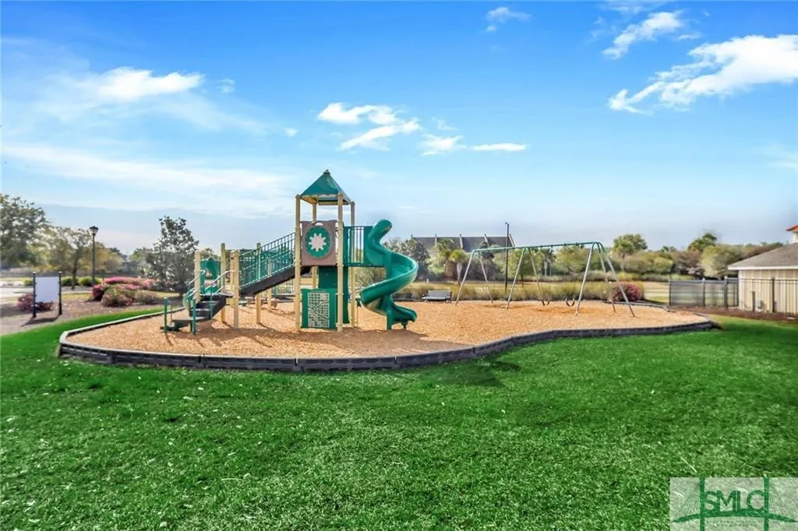

Photo pair 1


geometrically_supported
Shared-image context: No cross-listing duplicate found by the current three-hash test
Hash / geometric comparison evidence
{
"hash_hamming": {
"dhash": 2,
"phash": 0,
"center_phash": 0
},
"hash_min": 0,
"priority_policy": "obvious_v1_both_phashes_le_6_nonshared",
"exact_hash_hamming": {
"phash": 0,
"center_phash": 0
},
"orb_ransac": {
"score": 0.9120043668122272,
"detail": {
"inliers": 914,
"ratio_matches": 916,
"coverage": 0.463066459346349,
"homography": [
[
0.9995443813567227,
-0.0003266891851044185,
0.11162143176890814
],
[
-7.758516884098726e-05,
0.9991841475645836,
0.14217515149794302
],
[
-2.6509754445273106e-07,
-9.928264287503924e-07,
1.0
]
]
},
"comparison_ms": 11.026506996131502,
"feature_lookup_or_extraction_ms": 96.20802500285208
}
}